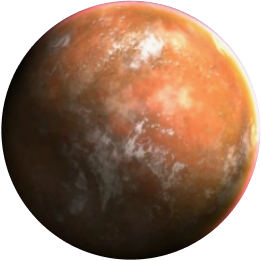

Выбери свою сторону
Тайтон
Планета происхождения
Джедаи
Описание
Воины светлой стороны силы. Использут, преимущественно, мечи синего или зеленого цвета. Разивают свой разум и подавляют эмоции.
Силы и способности
Светлая сторона силы, позволяет джедаям использовать способности контроля и защит. Джедаи почти не используют атакующие способности. Обладают даром внушения. На поле боя джедаи спокойны и собраны. Самые величайшие джедаи в истории были способны были останавливать катаклизмы на планетах и даже исцелять болезни
Корибан
Планета происхождения
Ситхи
Описание
Воины темной стороны силы. Используют красные или оарнжевые мечи. Концентрируются на максимизации своей эмоциональной энергии
Силы и способности
Темная сторона силы открывает для воина огромный спектр атакующих способностей. В бою ситх может перейти в состояние ярости и стать почти невоспримчивым к урону даже от других сильных джедаев. Самые мощные ситхи могут метать молнии из рук, концетрируя в них свою ярость. А величайшие из них могли поглощать энергию планет чтобы усилить себя. Известны случаи переселения своего сознания ситхами и обретение бессмертия.